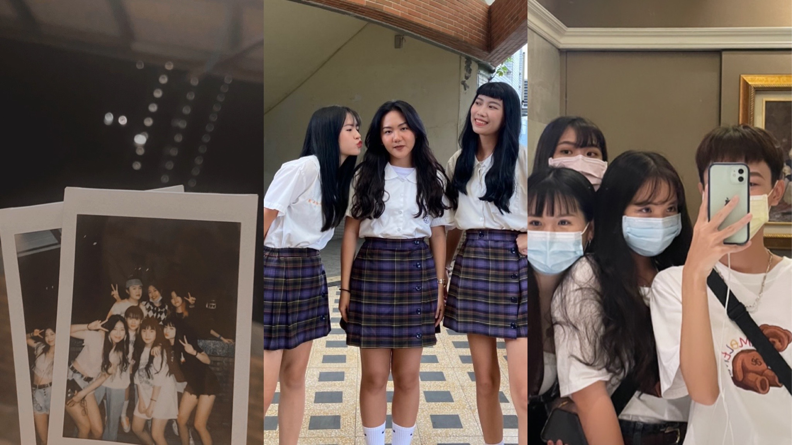
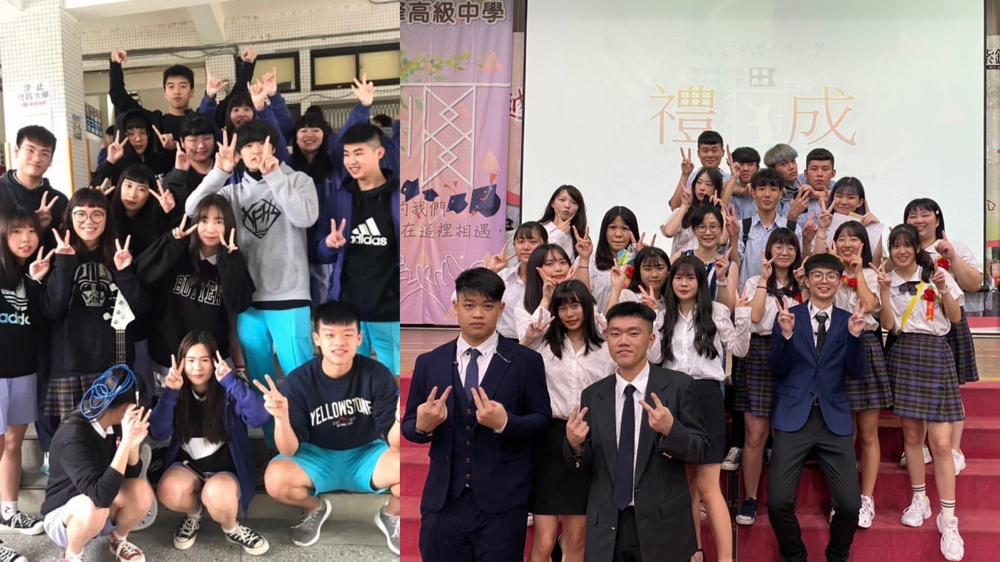

 會考結束後的我不知道自己想做什麼，所以我選擇讀普通高中，再給自己三年思考，於是我考上了新北市立秀峰高中，是間校風不太好，當然成績門檻也偏低的學校，開學的時候導師就跟我們說，這間學校是秀峰快樂高中，結果也真的很快樂，從國中就對高中生活很嚮往，期待著那種青春熱血沸騰的感覺，一上高中就加入了熱音社跟學生會，認識了很多好朋友，辦了很多活動，學習到了很多很多東西，從來沒有面對過真正的壓力和挫折的我，第一次體驗到當你成為學長姐玩社團跟學生會不光只是是玩而已，是要負起責任還有團隊合作的地方，要付出很多的時間跟金錢，人在團隊合作中不能光做自己愛做的事，那些大大小小的幹部名稱也並不是包裝高中生活的裝飾品，而是你要扛在肩膀上一整年的責任心，那些現在看起來沒什麼大不了的小事，對那時候力不從心的我們卻是很大的難關，不論是順利解決的困難，還是那些須將就和放棄的選擇，都是高中那些瑣碎日常不可或缺的每一筆，雖然中間遇到很多失望的時候，無能為力的日子，但平凡美好的回憶也仍然在心中的小角落，還好結局是很棒的，我不後悔自己那時的選擇，而這當中我最大的收穫之一是我充分了解了我自己，認識了自己的專長，喜歡與不喜歡的事，釐清了那些我以為的自己，我認為當時的我並不知道真實的自己是個什麼樣的人，包括自己的優點和缺點，還有別人眼中的我又是個什麼樣的人。在高中我的人際關係依舊很不錯雖然不太像國小或國中一樣到處交朋友,卻也認識了不少真心相伴的朋友，也是我以後會一直想珍惜的人們，我們一起度過了浪漫的青春歲月。